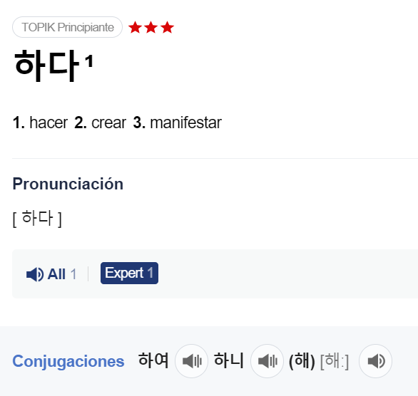
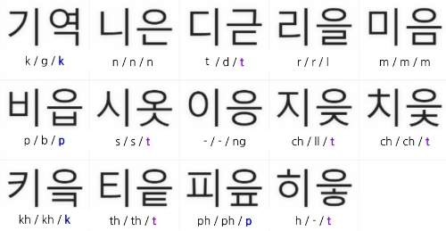

¡Es el momento de adentrarnos de verdad en nuestro ejercicio de lectura y fonética!
A partir de ahora ya eres nivel cero avanzado y tienes que usar [hangul] SIEMPRE para indicar cómo se pronuncia una palabra, ya que la pronunciación y la escritura no siempre van a coincidir, como en español. Además, este ejercicio será de gran ayuda para tu progreso en el aprendizaje. Recuerda, evita usar la romanización y usa el [hangul] para aprender a leer.
Y lo más importante: empieza a usar el diccionario coreano korean.dict.naver.com ya.
¿Sabes todo lo que este diccionario hará por ti? Te dirá, entre paréntesis la pronunciación de esa palabra, además de que podrás escuchar a nativos con diferentes acentos. y mucho más que irás descubriendo.
Si, el coreano como el español, tiene varios acentos y, por supuesto, esto influirá en la lectura. Pero intentaremos aprender el "acento estándar" o "acento normativo", el acento que sigue las normas o estándares establecidos para la pronunciación en ese idioma o país.
Antes de pasar a las regla o normas de lectura, quiero compartir contigo las 'normas no escritas' que, al principio, pueden parecer confusas, pero una vez que las comprendas, te ayudarán a disfrutar aún más del fascinante mundo del hangul.
|
En coreano, la primera sílaba de una palabra es la tónica, lo que significa que la primera consonante de esa sílaba se pronuncia con más fuerza o intensidad que las demás (OJO! pero no sube de tono como si fuera consonantes doble, solo se pronuncia más fuerte). Pero si no se encuentra en la sílaba no tonica, su sonido se suaviza o se vuelve casi inaudible.
|
Por eso:
- 가다 (ir) no te suena como /gada/ sino /kada/
- 자다 (dormir) no suena /llada/ sino /chada/.
- 학생 (estudiante) que suena /hak-seng/, pero si la ㅎ no es tónica 사랑해 (te quiero) suena /sa-ra-ne/
|
Lo mismo pasa con los diptongos o vocales iotizadas coreanas, donde normalmente solo la última vocal se pronuncia de manera sonora, mientras que la primera vocal se pronuncia de manera más débil.
|
Espero que ahora esta imagen y tablas que hice para explicar cómo suenan las consonantes según la posición, adquiera más sentido.

| consonantes |
se lee |
Vocales |
se lee |
| ㄱ |
g=gu/k |
이 |
i |
| ㄴ |
n |
아 |
a |
| ㄷ |
d/t |
어 |
o abierta |
| ㄹ |
r/l |
으 |
Intentar decir /e/ pero dices /u/ |
| ㅁ |
m |
오 |
o cerrada |
| ㅂ |
b/p |
우 |
u |
| ㅅ |
s/t |
야 |
ya |
| ㅇ |
no suena/ng |
여 |
yo |
| ㅈ |
jz=y/t |
요 |
io |
| ㅊ |
ch |
유 |
yu |
| ㅋ |
kh |
애 |
e |
| ㅌ |
th/t |
얘 |
ye |
| ㅍ |
ph/p |
에 |
e |
| ㅎ |
h/t |
예 |
ye |
¿Preparados para leer?